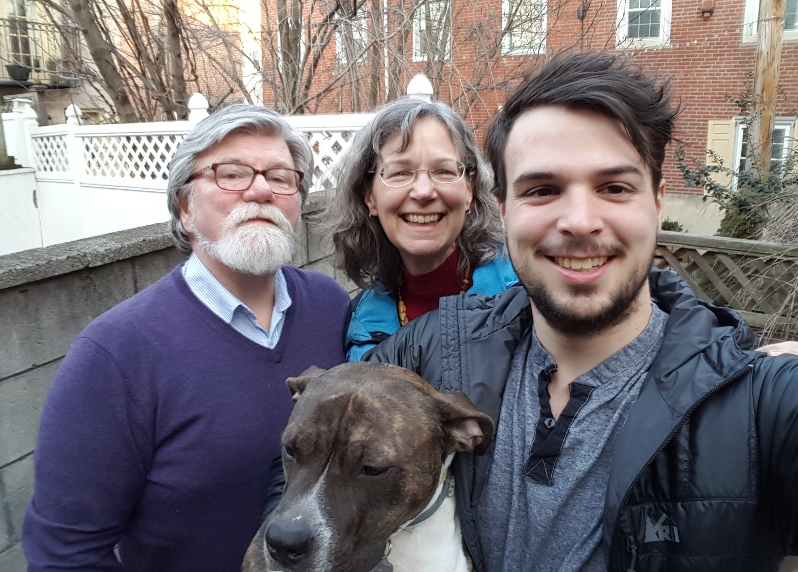
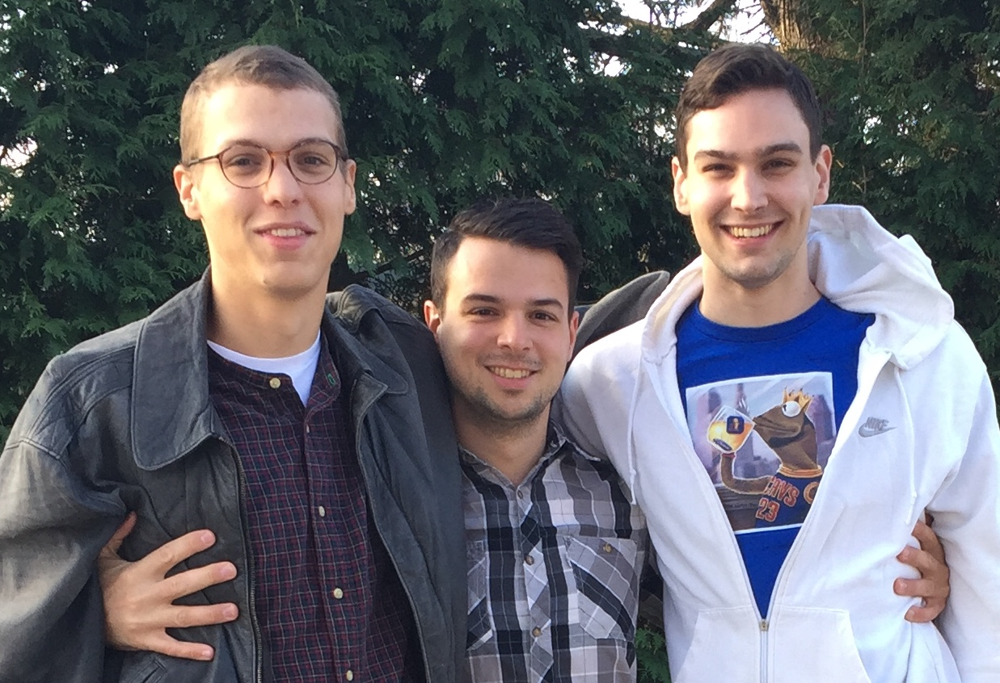

As I sit here on this transatlantic flight, venturing forth on an adventure which will be my first trip to Europe and Asia, I am comforted by the wafting smell of vomit. A lady two rows back has just shared with the entire flight the dietary travels of her day. It is humbling to know that no matter how high we climb, I am still amused by body humour.
Yes, the holiday letter is being written while aloft this year. 2016, it's been a hell of a year. They say that reading another's writing can be one of the most intimate things two people can share. So, congratulations, you have all joined me in the mile high club.
This past year has been one of my most eventful yet. A love venturing to a new city, a new job, a dog which has graduated into level 3 while still finding time to shit on the floor when the dishwasher is on, a mother moving closer to where I live (shortening the distance to 45 minutes, down from 9 hours...I'm so happy...), a brother into graduate school at one of the most elite engineering schools, a brother spending a summer abroad, and more friends getting engaged or having children than I can reasonably feel comfortable about.
Without further ado, the life and times of Alex Mann in 2016:
The Dog
Professor Juliette Henrietta Wagstaff made the most of her second year in
life. She has become a quite well travelled dog, having now visited Ohio and
Ottawa numerous times. Jules has made many human friends and has remained
stanchly on the fence about her canine company. She has learned how to hop
around on two legs, eat watermelon like a human, and also play the shell game
(3 cups, one has a treat).
The Woman
Natalie Elizabeth Wright now lives in the magnificent city of Milwaukee. This
past year she received an offer to work for the Chipstone Foundation as an
Assistant Curator. This is an organization which is pushing the boundaries of
what it means to be a museum in the 21st century. This has been a remarkable
position for her and has introduced her to many exciting opportunities in her
field. Just yesterday Nat was helping organize a think tank at the MET. In a
few days she will be giving a paper at the University of Mainz in Germany. She
has been a constant source of encouragement, an amazing companion, and one of
my better friends.

The Mother
Susan Marie Brasier is no longer a practicing lawyer. You read that correctly.
My mother, the women's rights advocate, battered women's shelter grant writer,
generally decent human being is now becoming a priest. She is studying at the
Princeton School of Theology and does her best to remind my brothers and I
that she is the only one of us who has attended an Ivy (U of T has the worst
international reputation). When she isn't spending her time as "Grandpa Susan"
for her partner Tom's grandchildren, she can be found hovering, nagging,
cooking, and smothering those in her vicinity with love.

The Brother
Bryan Jeffrey Mann is in contention for having an even crazier year than me. I
believe he is on his 3rd job since I last wrote, and will be off to study at
Georgia Tech in the new year. Bryan and I had the opportunity to go to the
Cleveland Cavaliers post NBA championship parade this year. It was a nice trip
and allowed us to bond in an uncharacteristically civil way. Bryan has managed
to feed me a healthy dose of both suggested reading and salsa.
The Tallest Brother
Charles Jacob Edward Mann spent this past summer abroad in Vienna. I am told
he spent his time studying to become a sausage maker. He has continued playing
Ultimate Frisbee for the Emory University Juice. Charley has continued to be a
kind soul, able to get me to laugh at the harder facets of life. He serves as
a constant catalyst for introspection in my life, asking the proper questions
and is someone I turn to for guidance despite our difference in age.
The Grandparents
Janet and Jerry Brasier are up to their old tricks. The two of them are
looking after the dog while I am abroad. Natalie and I have been putting
together a book detailing their life antics complete with illustrations. I
personally cannot wait to finish transcribing their stories (an arduous
process). They have both been massively supportive if not a little too
involved in my life. Meddling is their middle name. I love being around them
and am finding frequent excuses to travel to Ohio to visit. The wood shop in
the basement is an obvious lure, but the company is the hook.
Me
The start of this year was spent around close friends in Toronto. I climbed
Mount Washington with my climbing partner, wielding a mountaineering axe,
covered in ice, and happy as can be. I proceeded to go through a round of
layoffs at work, in which I myself did not lose my job, but I did see many of
my friends move onto bigger and better things. A while after this, the same
company split in two, adding another name to my resume. Some time later I
switched jobs entirely and am now working for a group called Circle CI. They
are based in San Francisco, but I have remained in Philly. Thanksgiving was
yet again in Dayton Ohio. While it seemed like there was a lot of criticism
for how the turkey should be cooked (even the dog was found licking it
in the garage while it thawed), everyone seemed happy in the end. I recently
checked off one of my "things todo" and presented
a talk in front of a
hundred people. To send the year out, I'm checking off another continent from
the list. Other than that, it's been attending weddings, meeting babies,
climbing, cooking, and carpentering.
To those who I haven't gotten to see recently, there will always be next year. To my friends, you know who you are.
Cheers and much love this holiday season,
Alex